本資料はDX実践！LINEミニアプリ×Datadogで課題総解決アプリを作ろう！ の題材となるミニアプリのデプロイ手順を解説します。
今回は以下のハンズオン資料で紹介されているアプリケーションをデプロイします。
システム構成
今回構築するミニアプリのシステム構成は以下のリンクで解説されている通り、AWSのマイクロサービスを使用したサーバレス構成になっています。
今回のハンズオンの環境構築をやっていきます。
なお、リージョン違いでのトラブルを防ぐためAWSの作業はすべてap-northeast-1(東京リージョン)で行います
事前準備
- AWSアカウント(IAMユーザーでログインしている場合は、AdministratorAccessポリシーが必要です。まだ作成されてない方はhttps://aws.amazon.com/jp/register-flow/ を参考に登録してください)
- Gitpodのアカウント(https://www.gitpod.io から登録してください。Github、Gitlab、BItbucketのアカウントが必要です)
Gitpodを起動
まずは開発環境を用意します。通常、AWSのハンズオンであればCloud9を使うことが多いですが、今回はアプリケーションでVPCを使用するため、開発環境にGitpodというサービスを使用します。
以下のレポジトリにアクセスします。
https://github.com/Miura55/line-mini-app-hands-on
レポジトリを開いたら画面下部のREADMEにある「Open in Gitpod」をクリックすることでハンズオンの開発環境を構築することができます。
初回の起動時にはDockerイメージのビルドが行われるので時間がかかります。
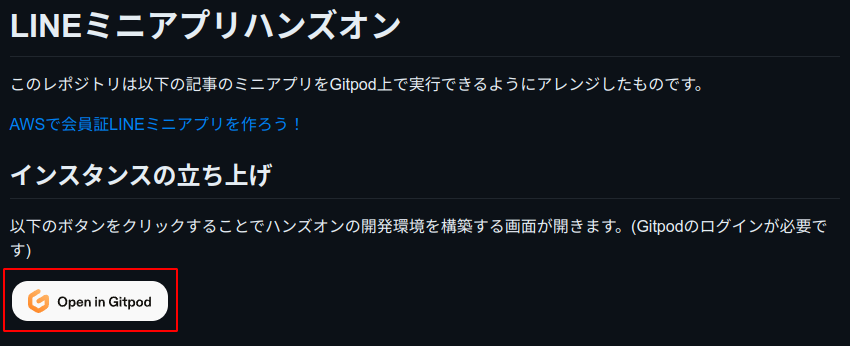
以下のようにVSCodeが起動できたら実行環境の用意は完了です。
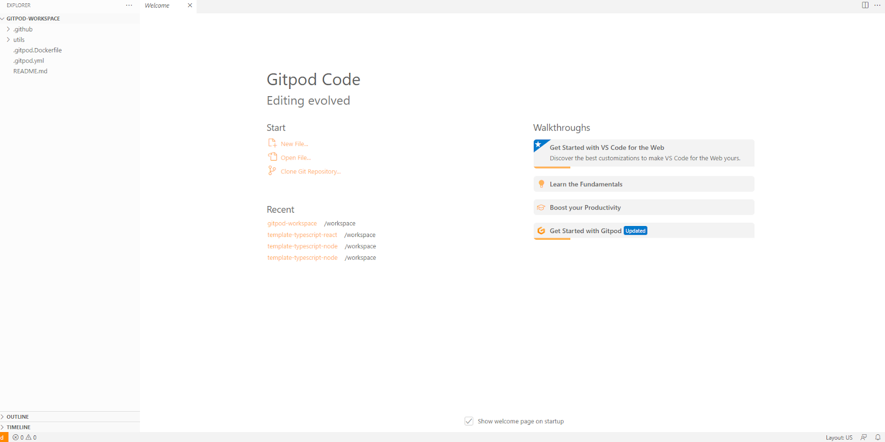
アクセスキーを入手
GitpodからAWSへの接続に必要なアクセスキーを入手するためにIAMユーザーを作成します（AdministratorAccessポリシーのIAMユーザーでログインしている場合はそのユーザーでアクセスキーを作成しても構いません）
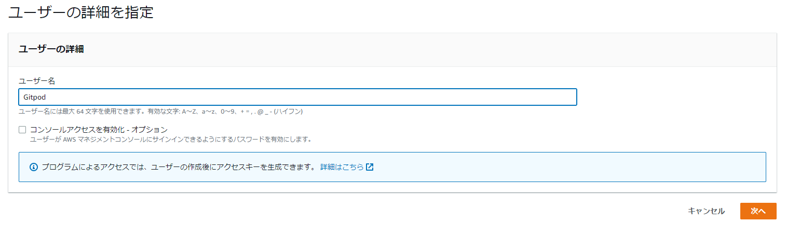
ポリシーはAdministratorAccessを選択します
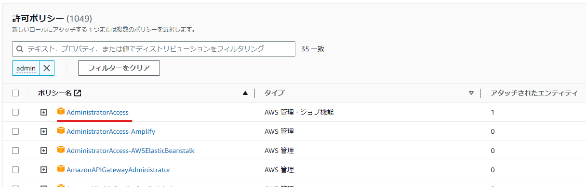
作成したIAMユーザーをクリックして「セキュリティ認証情報」タブをクリックしてアクセスキーを作成します
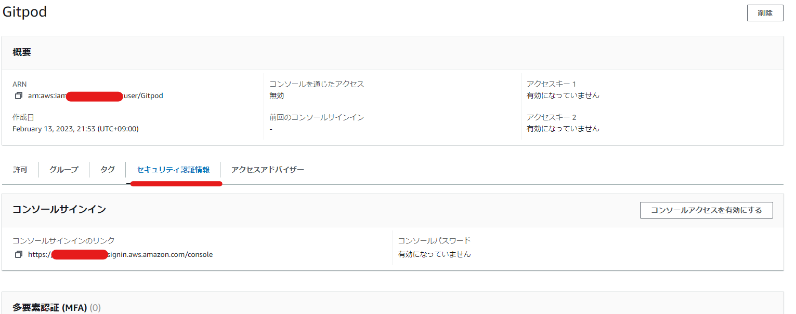
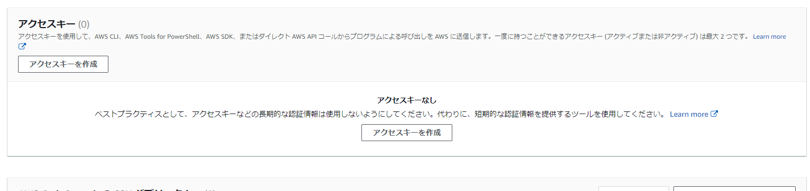
使用目的はCLIを選択して、その後下に表示されるチェックボックスにチェックをいれて次へ進みます。
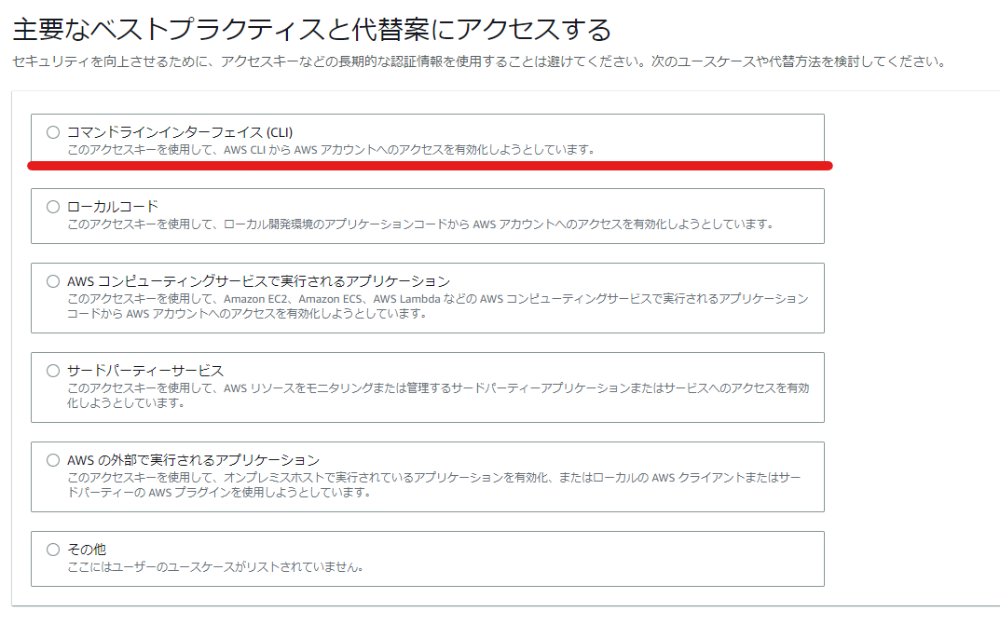
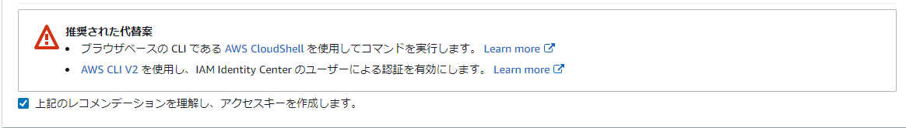
あとはデフォルトのままアクセスキーが取得できる画面まで進みます。アクセスキーの画面を閉じるとシークレットアクセスキーは2度と確認することができないので、忘れずにメモしておきます。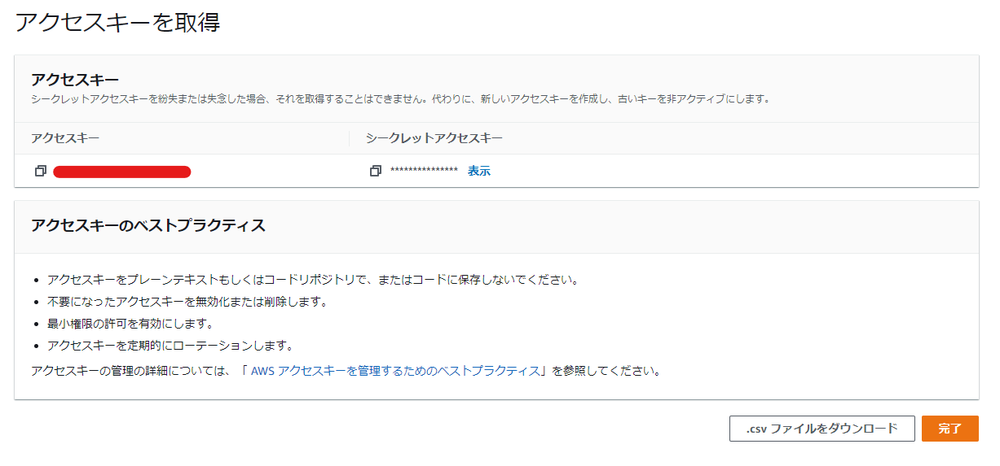
AWS CLIの設定をする
Gitpodに戻りターミナルで aws configure を実行し、AWSの認証情報を登録します。
AWS Access Key IDには先程取得したアクセスキーを入力します。
AWS Access Key ID [None]:【アクセスキー】
AWS Secret Access Key [None]:【シークレットアクセスキー】
Default region name [None]: ap-northeast-1
Default output format [None]: json設定ができたら aws iam list-usersでAWSのルートアカウント上にあるIAMユーザーの情報が一覧で表示されたらCLIの設定は正常に完了しています。もし、エラーが出る場合は認証情報に誤りが無いか確認してください。
{
"Users": [
{
"Path": "/",
"UserName": "develop",
"UserId": "AIDA4IPKU4JDEXAMPLEID",
"Arn": "arn:aws:iam::123456789000:user/develop",
"CreateDate": "2022-12-29T06:54:08+00:00",
"PasswordLastUsed": "2023-02-13T11:40:14+00:00"
},
{
"Path": "/",
"UserName": "Gitpod",
"UserId": "AIDA4IPKU4JEXAMPLEID",
"Arn": "arn:aws:iam::123456789000:user/Gitpod",
"CreateDate": "2023-02-13T12:53:01+00:00"
}
]
}
ターミナルに貼り付けるときに以下のダイアログが表示されたらコピペを許可してもらっていいです。

ここまでで開発環境の構築は完了です。次のステップでミニアプリをデプロイしていきます。
serverless.ymlを修正
まずはserverless.ymlを修正します。このファイルはミニアプリに必要なAWSのサービスを定義しています。
serverless.ymlの1行目の your-name を他の人とバッティングしないサービス名に変更します。TwiterやGithubなどのソーシャルのアカウントIDを設定するといいです。
service: {{YOUR NAME}}-line-member-cardデプロイを実行
serverless.ymlを修正したところで問題なくデプロイできることを確認するために早速デプロイをしていきます。
以下のコマンドを実行するとデプロイが行われます。
yarn deployこのデプロイでは初回のデプロイで新規にAWSのサービスを構築するために時間がかかります。
デプロイ後、以下のようにStack Outputsが表示されたらデプロイは成功です。
Stack Outputs:
YourNameDashlineDashmemberDashcardDashdevDashnodejsDashdefaultLambdaLayerQualifiedArn: arn:aws:lambda:ap-northeast-1:123456789012:layer:your-name-line-member-card-dev-nodejs-default:13
StaticContentsCloudFrontUrl: https://hogehuga.cloudfront.net
BackendLambdaFunctionQualifiedArn: arn:aws:lambda:ap-northeast-1:123456789012:function:your-name-line-member-card-dev-backend:5
ServiceEndpoint: https://hogehuga.execute-api.ap-northeast-1.amazonaws.com/dev
ServerlessDeploymentBucketName: kmiura-line-member-card-dev-deploymentデプロイされたページを確認
出力されたStack Outputのうち、 StaticContentsCloudFrontUrl の項目にあるCloudfrontのURLをブラウザで開きます。
以下の画面が表示されたらデプロイは成功です。
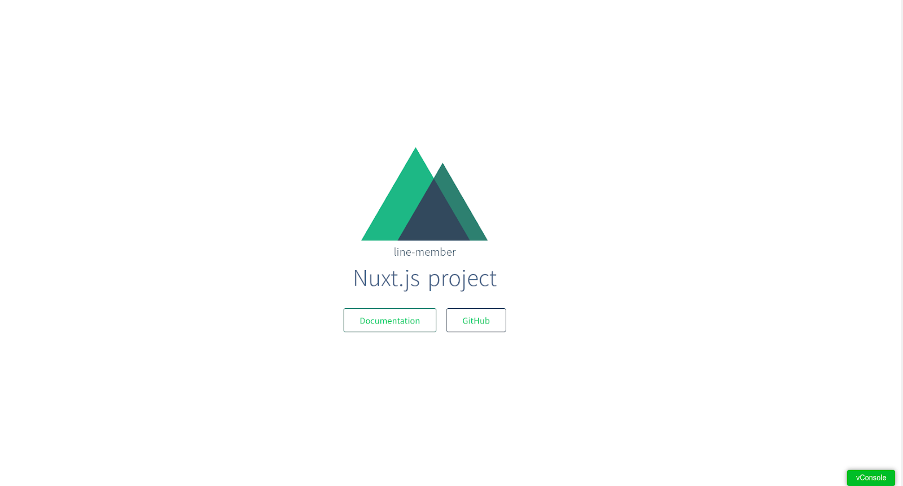
ここまでできたら、最初のデプロイは完了です。次のページからは実際にミニアプリを作成していきます。
ミニアプリのチャネル作成
以下のドキュメントを参考にミニアプリのチャネルを作成します。
作成したら「チャネル基本設定」タブのチャネルIDのうち、開発用のチャネルIDをコピーしてどこかにメモしておきます。
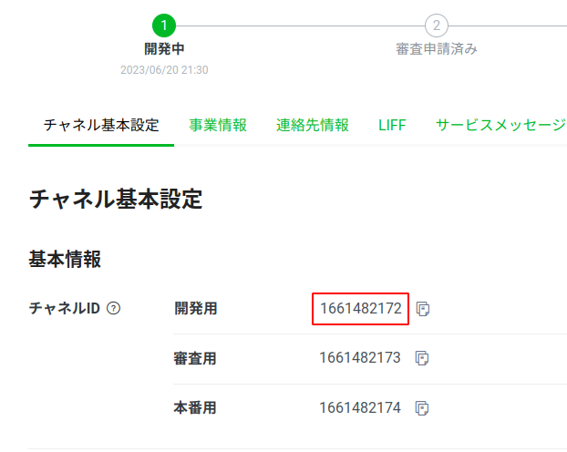
次に「LIFF」タブをクリックして「LIFF URL」の項目にある開発用のURLをコピーして、どこかにメモしておきます。このURLがミニアプリのURLになります。
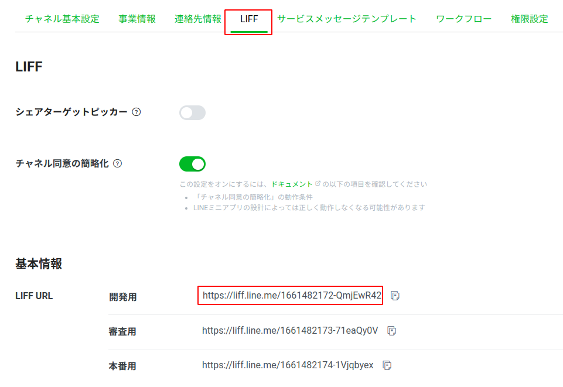
同じく「LIFF」タブの画面をスクロールするとあらわれる「エンドポイントURL」に先程デプロイしたときに確認したCloudfrontのURLを設定します。URLは「編集」ボタンをクリックすることで変更できるのでデフォルトのURLからCloudfrontのURLに書き換えます。
LIFF URLにアクセスするとこのエンドポイントURLに接続されます。
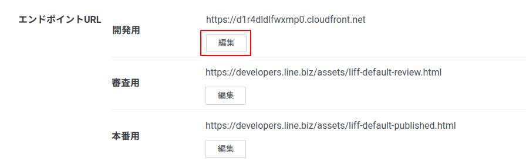
ミニアプリが開くか確認する
これでミニアプリの設定はひとまず完了です。先程コピーしたLIFF URLをパソコンのブラウザで開きます。
すると以下の画面が表示されるのでスマホのLINEアプリのQRコードリーダーで画面のQRコードをスキャンします。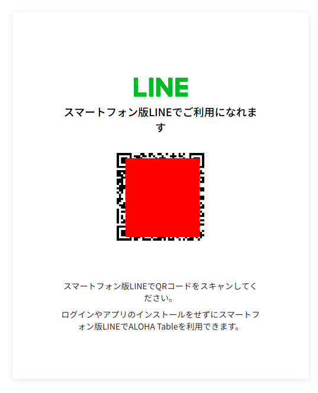
スキャンをしてスマホ上で先程パソコンのブラウザで開いたページを開くことができればミニアプリの設定は問題なくできています。
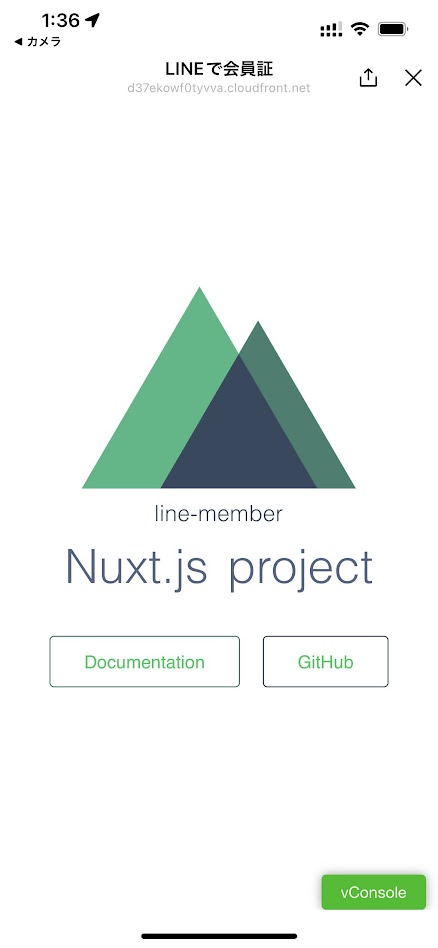
以上でミニアプリは作成できました。
ただ、今はNext.jsのテンプレートページを表示しているだけなので次のページで会員証を作成していきます。
パラメータストアにミニアプリの設定情報を登録する
AWSにはSystems ManagerというAWS上で設定値を管理するサービスです。このサービスを使用することでAWS上で動作しているアプリケーションで必要な設定値を参照できるようになるのでソースコード内に設定値をハードコーディングせずにすみます。
AWSのコンソール画面でAWS Systems Managerを開き、パラメータストアをクリックします。
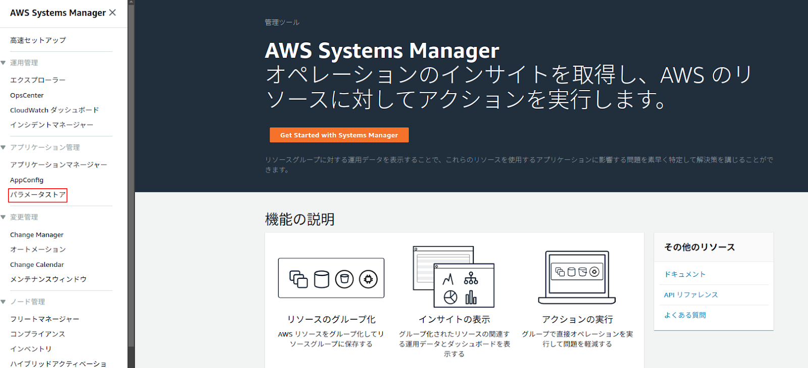
パラメータストアの画面を開いたら「パラメータの作成」をクリックします。
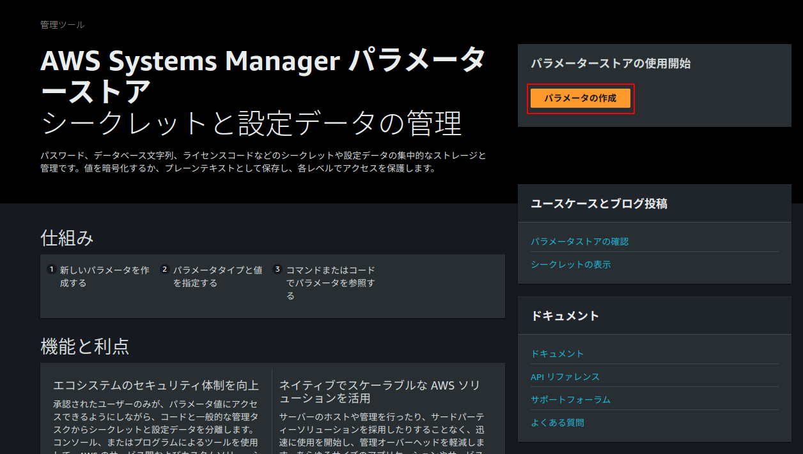
ここではミニアプリに必要なパラメータとして、チャネルIDとLIFF IDを設定します。
チャネルIDは以下の設定を行い、画面下の「パラメータを作成」をクリックします。
- 名前：
/dev/{{YOUR_SERVICE_NAME}}/LINE_CHANNEL_ID({{YOUR_SERVICE_NAME}}の箇所はserverless.ymlの1行目に設定しているサービス名を設定します) - データ型：text
- 値：ミニアプリのチャネル作成時にメモしたチャネルID
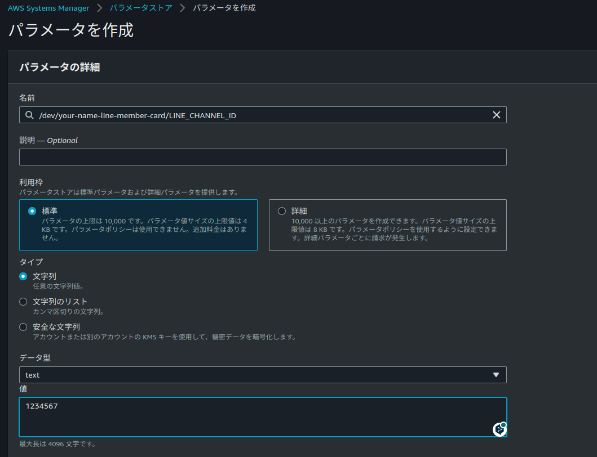
同様にLIFF IDは以下の設定を行います。
- 名前：
/dev/{{YOUR_SERVICE_NAME}}/LIFF_ID({{YOUR_SERVICE_NAME}}の箇所はserverless.ymlの1行目に設定しているサービス名を設定します) - データ型：text
- 値：ミニアプリのチャネル作成時にメモしたLIFF URLのうち、
https://liff.line.me/以降の文字列 (例えばhttps://liff.line.me/1657239651-4MOr6aYaの場合は1657239651-4MOr6aYaがLIFF IDです)
コードを修正
続いてアプリのコードを修正します。
frontend/pages/index.vue を以下のコードに書き換えます。書き換えるとコードは自動で保存されます。
<template>
<section class="app-wrapper">
<v-progress-circular
v-if="!isLoggedIn"
indeterminate
color="primary"
:size="120"
></v-progress-circular>
<div v-if="isLoggedIn" class="member-card-app">
<div class="header">
<v-icon color="#ffffff" large>{{mdiFruitPineapple}}</v-icon>
<h2>ALOHA MEMBERS CARD</h2>
</div>
<v-card class="member-card">
<h4 v-if="profile" class="mt-3" >{{profile.displayName}}様</h4>
<div class="qr-code-app">
<div class="qr-code-wrapper">
<vue-qrcode :value="userId" :options="qrOption" tag="img" class="qr-code"/>
<div v-if="profile" class="app-icon-wrapper">
<div class="white-circle" >
<v-avatar v-if="profile.pictureUrl" :size="54" class="avatar">
<v-img :src="profile.pictureUrl" :alt="profile.displayName"/>
</v-avatar>
</div>
</div>
</div>
</div>
</v-card>
</div>
</section>
</template>
<script>
import liff from "@line/liff"
import axiosBase from "axios"
import VueQrcode from '@chenfengyuan/vue-qrcode'
import { mdiFruitPineapple } from '@mdi/js'
const LIFF_ID = process.env.LIFF_ID
const axios = axiosBase.create({
baseURL: '/api',
headers: {
'Content-Type': 'application/json',
'X-Requested-With': 'XMLHttpRequest'
},
responseType: 'json'
})
const qrOption = {
errorCorrectionLevel: "H",
maskPattern: 0,
margin: 2,
scale: 2,
width: 240,
color: {
dark: '#222222',
light: "#ffffff"
}
}
export default {
components: {VueQrcode},
data() {
return {
isLoggedIn: false,
userId: null,
profile: null,
qrOption,
mdiFruitPineapple
}
},
async mounted() {
// 1. LIFFの初期化
await liff.init({liffId: LIFF_ID})
.catch((err) => {
console.error(err)
window.alert('LIFFの初期化失敗。\n' + err)
})
// 2. LINEに未認証の場合、ログイン画面にリダイレクト
if (!liff.isLoggedIn()) {
await liff.login()
return
}
const { userId } = liff.getContext()
this.userId = userId
this.isLoggedIn = true
let hasProfilePermission = await this.verifyProfilePermission()
if (!hasProfilePermission) {
await this.requestAllPermission()
hasProfilePermission = await this.verifyProfilePermission()
}
if (hasProfilePermission) {
this.profile = await liff.getProfile()
}
const idToken = liff.getIDToken()
await axios.put('/user', { userId, idToken })
this.isLoggedIn = true
},
methods: {
async verifyProfilePermission() {
const permissionStatus = await liff.permission.query("profile")
return permissionStatus.state === "granted"
},
async requestAllPermission() {
try {
await liff.permission.requestAll()
} catch(e) {
console.error(e)
}
}
}
}
</script>
<style scoped lang="scss">
.app-wrapper {
height: 100vh;
display: flex;
justify-content: center;
align-items: center;
text-align: center;
background-color: #3ee577;
}
.header {
margin: 8px 0 0 0;
h2 {
margin: 8px 0 0 0;
font-size: 18px;
color: #ffffff;
}
}
.member-card-app {
display: flex;
flex-direction: column;
height: 100%;
width: 100%;
.member-card {
margin: 12px 20px 0 12px;
padding: 12px 0 24px;
}
}
.qr-code-app {
display: flex;
justify-content: center;
.qr-code-wrapper {
position: relative;
.qr-code {
max-width: 240px;
width: 100%;
}
.app-icon-wrapper {
position: absolute;
top: 0;
left: 0;
width: 100%;
height: 100%;
display: flex;
justify-content: center;
align-items: center;
.white-circle {
width: 60px;
height: 60px;
border-radius: 30px;
background-color: #ffffff;
.avatar {
margin: 3px;
}
}
.app-icon {
max-width: 54px
}
}
}
}
</style>
デプロイ
コードを修正したらデプロイを行いますが、その前にデプロイの定義をしている serverless.yml の75行目のコメントアウトを解除します。この設定を追加することで次の手順で必要になるS3のアクセス権限を追加できます。
resources:
Resources:
S3Storage:
Type: 'AWS::S3::Bucket'
Properties:
BucketName: '${self:custom.app.PUBLIC_BUCKET}'
WebsiteConfiguration:
IndexDocument: index.html
AccessControl: PublicRead # ←この行にある#を外す
OwnershipControls:
Rules:
- ObjectOwnership: ObjectWriter
PublicAccessBlockConfiguration:
BlockPublicAcls: false
BlockPublicPolicy: false
IgnorePublicAcls: false
RestrictPublicBuckets: falseその後以下のコマンドでデプロイを実行します。ビルドも実行されるためデプロイには時間がかかります。
yarn deployデプロイ実行後、以下の画面が表示されたら会員証のデプロイは成功です。
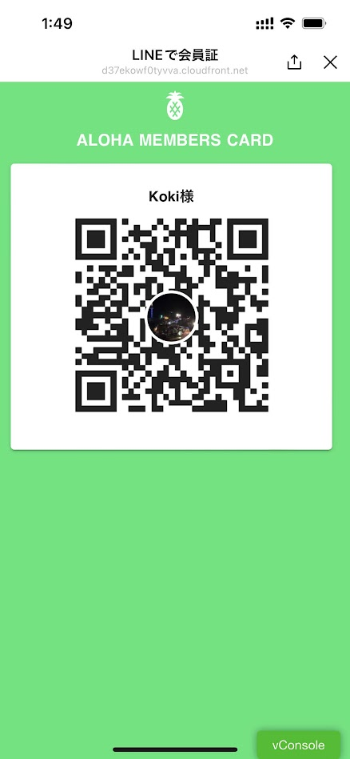
動作確認
それでは会員証サービスの動作確認です。
ブラウザで「CloudfrontのURL/admin」を開くと管理画面が表示されます。管理画面の右上のQRコードアイコンをクリックしてQRコードリーダーを開きます。
QRコードリーダーを開いたときに右上のカメラアイコンにスラッシュが入っているかと思うのでクリックしてカメラを起動します。
ブラウザでカメラのアクセス許可のダイアログが表示されたときは許可します。
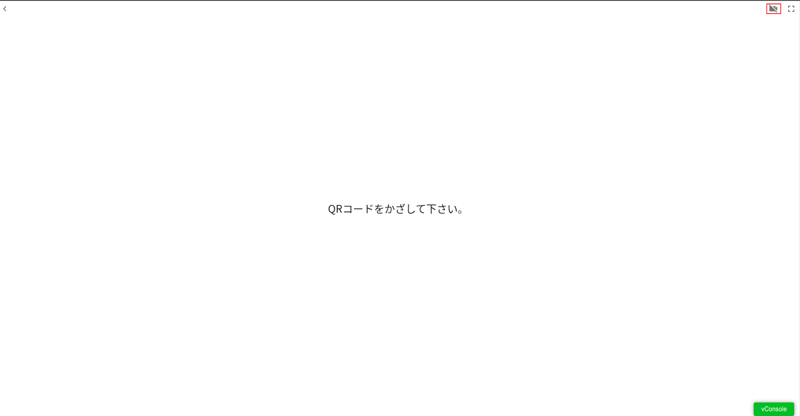
スキャンを行ったときに以下の画面が表示されて音がなったら、チェックインは正常に動作しています。
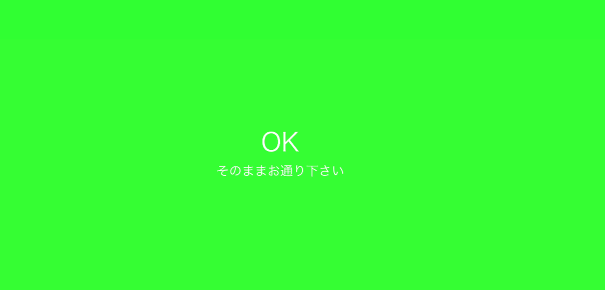
管理画面に戻ったときに以下の通り会員証を読み取ったユーザーが一覧で表示されたら動作確認は成功です
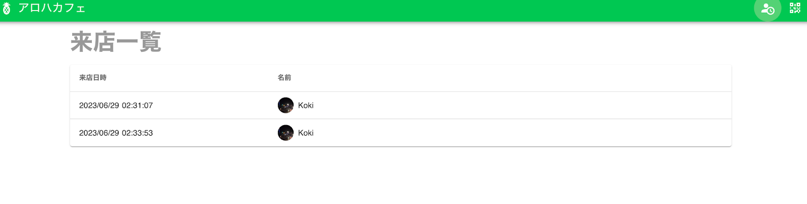
以上でミニアプリ構築のパートは終了です。お疲れ様でした！
この後は、このミニアプリをDatadogで監視をできるようにアレンジをして、さらにKPIを可視化するためのBI構築を行います。
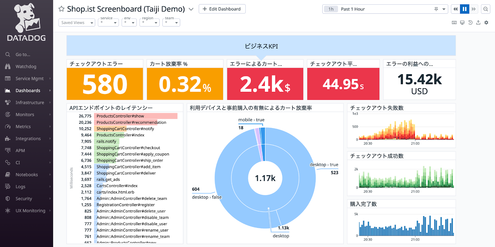
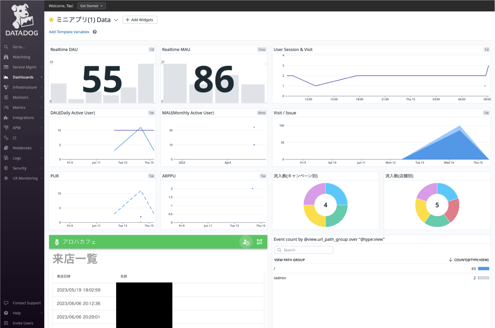
次のページではハンズオン終了後の片付け手順を解説します。
Datadog連携まですべて完了した後にご確認ください。
ここではハンズオン終了後の片付けの手順を解説します。今回構築したアプリケーションは放置していると多少ではありますが毎月AWSの料金がかかるので使わなくなったら削除することをお勧めします。
Serverless Flameworkで構築したリソースの削除
Serverless Flameworkで構築したアプリケーションは以下のコマンドで削除できます。
sls remove上記のコマンドでLambdaやCloudfrontなどは削除されますが、フロントエンドのコードを格納していたS3バケットは削除されないのでS3のバケットはAWSのコンソール画面から削除します。 {{YOUR_NAME}}-line-member-card-dev-deployment の名前のバケットを削除します。
Gitpodのインスタンスの削除
Gitpodはフリープランであればタイムアウトでインスタンスが止まるだけで請求は来ないのでハンズオンの復習をするために残してもいいですし、削除したい場合は https://gitpod.io/workspaces から削除することができます。

IAMアクセスキーの削除
ハンズオンで使用したIAMのアクセスキーには AdministratorAccessのポリシーがアタッチされているのでハンズオン終了後は削除しておくと安全です。